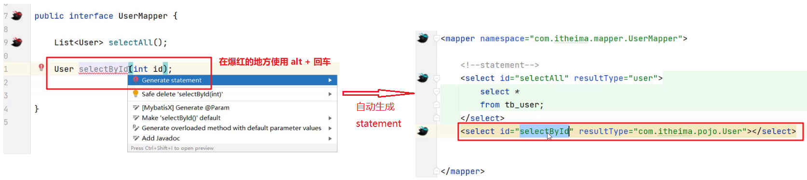
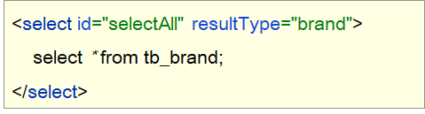
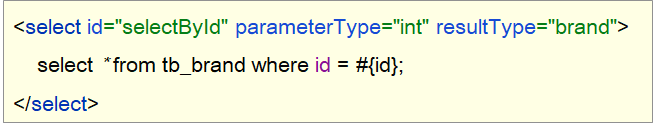
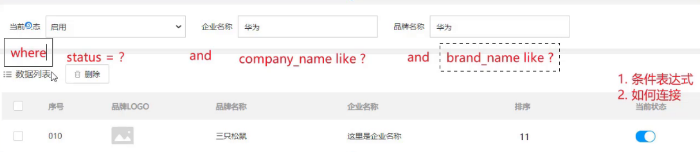
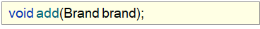
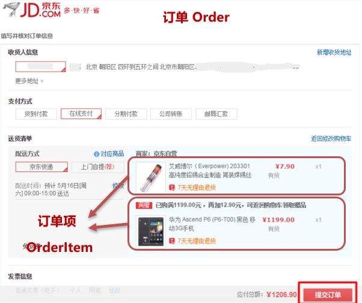
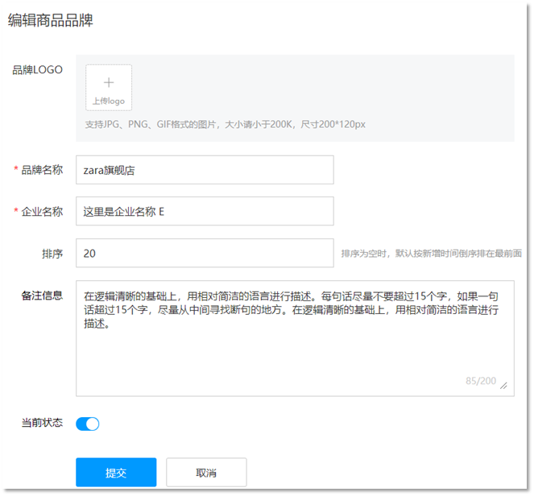
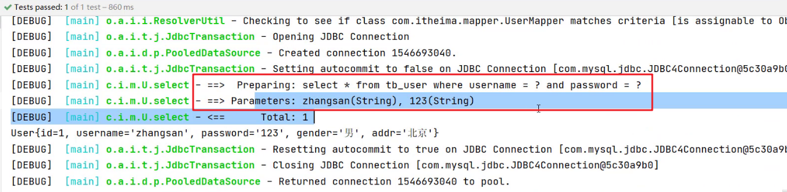

javaweb-05-MyBatis
本文最后更新于：2022年8月15日 晚上
本文是黑马程序员的JavaWeb基础教程的配套官方笔记，仅供学习使用
Mybatis练习
目标
- 能够使用映射配置文件实现CRUD操作
- 能够使用注解实现CRUD操作
1，配置文件实现CRUD
如上图所示产品原型，里面包含了品牌数据的 查询
、按条件查询、添加、删除、批量删除、修改
等功能，而这些功能其实就是对数据库表中的数据进行CRUD操作。接下来我们就使用Mybatis完成品牌数据的增删改查操作。以下是我们要完成功能列表：
- 查询
- 查询所有数据
- 查询详情
- 条件查询
- 添加
- 修改
- 修改全部字段
- 修改动态字段
- 删除
- 删除一个
- 批量删除
我们先将必要的环境准备一下。
1.1 环境准备
数据库表（tb_brand）及数据准备
1
2
3
4
5
6
7
8
9
10
11
12
13
14
15
16
17
18
19
20
21
22
23-- 删除tb_brand表
drop table if exists tb_brand;
-- 创建tb_brand表
create table tb_brand
(
-- id 主键
id int primary key auto_increment,
-- 品牌名称
brand_name varchar(20),
-- 企业名称
company_name varchar(20),
-- 排序字段
ordered int,
-- 描述信息
description varchar(100),
-- 状态：0：禁用 1：启用
status int
);
-- 添加数据
insert into tb_brand (brand_name, company_name, ordered, description, status)
values ('三只松鼠', '三只松鼠股份有限公司', 5, '好吃不上火', 0),
('华为', '华为技术有限公司', 100, '华为致力于把数字世界带入每个人、每个家庭、每个组织，构建万物互联的智能世界', 1),
('小米', '小米科技有限公司', 50, 'are you ok', 1);实体类 Brand
在
com.itheima.pojo包下创建 Brand 实体类。1
2
3
4
5
6
7
8
9
10
11
12
13
14
15
16public class Brand {
// id 主键
private Integer id;
// 品牌名称
private String brandName;
// 企业名称
private String companyName;
// 排序字段
private Integer ordered;
// 描述信息
private String description;
// 状态：0：禁用 1：启用
private Integer status;
//省略 setter and getter。自己写时要补全这部分代码
}编写测试用例
测试代码需要在
test/java目录下创建包及测试用例。项目结构如下：
安装 MyBatisX 插件
MybatisX 是一款基于 IDEA 的快速开发插件，为效率而生。
主要功能
- XML映射配置文件 和 接口方法 间相互跳转
- 根据接口方法生成 statement
安装方式
点击
file，选择settings，就能看到如下图所示界面
注意：安装完毕后需要重启IDEA
插件效果

红色头绳的表示映射配置文件，蓝色头绳的表示mapper接口。在mapper接口点击红色头绳的小鸟图标会自动跳转到对应的映射配置文件，在映射配置文件中点击蓝色头绳的小鸟图标会自动跳转到对应的mapper接口。也可以在mapper接口中定义方法，自动生成映射配置文件中的
statement，如图所示
1.2 查询所有数据

如上图所示就页面上展示的数据，而这些数据需要从数据库进行查询。接下来我们就来讲查询所有数据功能，而实现该功能我们分以下步骤进行实现：
编写接口方法：Mapper接口
参数：无
查询所有数据功能是不需要根据任何条件进行查询的，所以此方法不需要参数。
结果：List
我们会将查询出来的每一条数据封装成一个
Brand对象，而多条数据封装多个Brand对象，需要将这些对象封装到List集合中返回。
执行方法、测试
1.2.1 编写接口方法
在 com.itheima.mapper 包写创建名为
BrandMapper 的接口。并在该接口中定义
List<Brand> selectAll() 方法。
1 | |
1.2.2 编写SQL语句
在 reources 下创建 com/itheima/mapper
目录结构，并在该目录下创建名为 BrandMapper.xml
的映射配置文件
1 | |
1.2.3 编写测试方法
在 MybatisTest 类中编写测试查询所有的方法
1 | |
注意：现在我们感觉测试这部分代码写起来特别麻烦，我们可以先忍忍。以后我们只会写上面的第3步的代码，其他的都不需要我们来完成。
执行测试方法结果如下：

从上面结果我们看到了问题，有些数据封装成功了，而有些数据并没有封装成功。为什么这样呢？
这个问题可以通过两种方式进行解决：
- 给字段起别名
- 使用resultMap定义字段和属性的映射关系
1.2.4 起别名解决上述问题
从上面结果可以看到 brandName 和 companyName
这两个属性的数据没有封装成功，查询 实体类 和 表中的字段
发现，在实体类中属性名是 brandName 和
companyName ，而表中的字段名为 brand_name 和
company_name，如下图所示
。那么我们只需要保持这两部分的名称一致这个问题就迎刃而解。

我们可以在写sql语句时给这两个字段起别名，将别名定义成和属性名一致即可。
1 | |
而上面的SQL语句中的字段列表书写麻烦，如果表中还有更多的字段，同时其他的功能也需要查询这些字段时就显得我们的代码不够精炼。Mybatis提供了sql
片段可以提高sql的复用性。
SQL片段：
将需要复用的SQL片段抽取到
sql标签中1
2
3<sql id="brand_column">
id, brand_name as brandName, company_name as companyName, ordered, description, status
</sql>id属性值是唯一标识，引用时也是通过该值进行引用。
在原sql语句中进行引用
使用
include标签引用上述的 SQL 片段，而refid指定上述 SQL 片段的id值。1
2
3
4
5<select id="selectAll" resultType="brand">
select
<include refid="brand_column" />
from tb_brand;
</select>
1.2.5 使用resultMap解决上述问题
起别名 + sql片段的方式可以解决上述问题，但是它也存在问题。如果还有功能只需要查询部分字段，而不是查询所有字段，那么我们就需要再定义一个 SQL 片段，这就显得不是那么灵活。
那么我们也可以使用resultMap来定义字段和属性的映射关系的方式解决上述问题。
在映射配置文件中使用resultMap定义 字段 和 属性 的映射关系
1
2
3
4
5
6
7
8
9
10
11
12<resultMap id="brandResultMap" type="brand">
<!--
id：完成主键字段的映射
column：表的列名
property：实体类的属性名
result：完成一般字段的映射
column：表的列名
property：实体类的属性名
-->
<result column="brand_name" property="brandName"/>
<result column="company_name" property="companyName"/>
</resultMap>注意：在上面只需要定义 字段名 和 属性名 不一样的映射，而一样的则不需要专门定义出来。
SQL语句正常编写
1
2
3
4<select id="selectAll" resultMap="brandResultMap">
select *
from tb_brand;
</select>
1.2.6 小结
实体类属性名 和 数据库表列名 不一致，不能自动封装数据
- ==起别名：==在SQL语句中，对不一样的列名起别名，别名和实体类属性名一样
- 可以定义
片段，提升复用性
- 可以定义
- ==resultMap：==定义
完成不一致的属性名和列名的映射
而我们最终选择使用 resultMap的方式。查询映射配置文件中查询所有的 statement 书写如下：
1 | |
1.3 查询详情

有些数据的属性比较多，在页面表格中无法全部实现，而只会显示部分，而其他属性数据的查询可以通过
查看详情 来进行查询，如上图所示。
查看详情功能实现步骤：
编写接口方法：Mapper接口

参数：id
查看详情就是查询某一行数据，所以需要根据id进行查询。而id以后是由页面传递过来。
结果：Brand
根据id查询出来的数据只要一条，而将一条数据封装成一个Brand对象即可
编写SQL语句：SQL映射文件

执行方法、进行测试
1.3.1 编写接口方法
在 BrandMapper 接口中定义根据id查询数据的方法
1 | |
1.3.2 编写SQL语句
在 BrandMapper.xml 映射配置文件中编写
statement，使用 resultMap 而不是使用
resultType
1 | |
注意：上述SQL中的 #{id}先这样写，一会我们再详细讲解
1.3.3 编写测试方法
在 test/java 下的 com.itheima.mapper 包下的
MybatisTest类中 定义测试方法
1 | |
执行测试方法结果如下：

1.3.4 参数占位符
查询到的结果很好理解就是id为1的这行数据。而这里我们需要看控制台显示的SQL语句，能看到使用？进行占位。说明我们在映射配置文件中的写的
#{id}
最终会被？进行占位。接下来我们就聊聊映射配置文件中的参数占位符。
mybatis提供了两种参数占位符：
#{} ：执行SQL时，会将 #{} 占位符替换为？，将来自动设置参数值。从上述例子可以看出使用#{} 底层使用的是
PreparedStatement${} ：拼接SQL。底层使用的是
Statement，会存在SQL注入问题。如下图将 映射配置文件中的 #{} 替换成 ${} 来看效果1
2
3
4<select id="selectById" resultMap="brandResultMap">
select *
from tb_brand where id = ${id};
</select>重新运行查看结果如下：

==注意：==从上面两个例子可以看出，以后开发我们使用 #{} 参数占位符。
1.3.5 parameterType使用
对于有参数的mapper接口方法，我们在映射配置文件中应该配置
ParameterType
来指定参数类型。只不过该属性都可以省略。如下图：
1 | |
1.3.6 SQL语句中特殊字段处理
以后肯定会在SQL语句中写一下特殊字符，比如某一个字段大于某个值，如下图

可以看出报错了，因为映射配置文件是xml类型的问题，而 > < 等这些字符在xml中有特殊含义，所以此时我们需要将这些符号进行转义，可以使用以下两种方式进行转义
转义字符
下图的
<就是<的转义字符。
<[CDATA[内容]]>

1.4 多条件查询

我们经常会遇到如上图所示的多条件查询，将多条件查询的结果展示在下方的数据列表中。而我们做这个功能需要分析最终的SQL语句应该是什么样，思考两个问题
- 条件表达式
- 如何连接
条件字段 企业名称 和 品牌名称
需要进行模糊查询，所以条件应该是：

简单的分析后，我们来看功能实现的步骤：
编写接口方法
- 参数：所有查询条件
- 结果：List
在映射配置文件中编写SQL语句
编写测试方法并执行
1.4.1 编写接口方法
在 BrandMapper 接口中定义多条件查询的方法。
而该功能有三个参数，我们就需要考虑定义接口时，参数应该如何定义。Mybatis针对多参数有多种实现
使用
@Param("参数名称")标记每一个参数，在映射配置文件中就需要使用#{参数名称}进行占位1
List<Brand> selectByCondition(@Param("status") int status, @Param("companyName") String companyName,@Param("brandName") String brandName);将多个参数封装成一个 实体对象 ，将该实体对象作为接口的方法参数。该方式要求在映射配置文件的SQL中使用
#{内容}时，里面的内容必须和实体类属性名保持一致。1
List<Brand> selectByCondition(Brand brand);将多个参数封装到map集合中，将map集合作为接口的方法参数。该方式要求在映射配置文件的SQL中使用
#{内容}时，里面的内容必须和map集合中键的名称一致。1
List<Brand> selectByCondition(Map map);
1.4.2 编写SQL语句
在 BrandMapper.xml 映射配置文件中编写
statement，使用 resultMap 而不是使用
resultType
1 | |
1.4.3 编写测试方法
在 test/java 下的 com.itheima.mapper 包下的
MybatisTest类中 定义测试方法
1 | |
1.4.4 动态SQL
上述功能实现存在很大的问题。用户在输入条件时，肯定不会所有的条件都填写，这个时候我们的SQL语句就不能那样写的
例如用户只输入 当前状态 时，SQL语句就是
1 | |
而用户如果只输入企业名称时，SQL语句就是
1 | |
而用户如果输入了 当前状态 和 企业名称
时，SQL语句又不一样
1 | |
针对上述的需要，Mybatis对动态SQL有很强大的支撑：
if
choose (when, otherwise)
trim (where, set)
foreach
我们先学习 if 标签和 where 标签：
if 标签：条件判断
- test 属性：逻辑表达式
1
2
3
4
5
6
7
8
9
10
11
12
13
14<select id="selectByCondition" resultMap="brandResultMap">
select *
from tb_brand
where
<if test="status != null">
and status = #{status}
</if>
<if test="companyName != null and companyName != '' ">
and company_name like #{companyName}
</if>
<if test="brandName != null and brandName != '' ">
and brand_name like #{brandName}
</if>
</select>如上的这种SQL语句就会根据传递的参数值进行动态的拼接。如果此时status和companyName有值那么就会值拼接这两个条件。
执行结果如下：

但是它也存在问题，如果此时给的参数值是
1
2
3
4Map map = new HashMap();
// map.put("status" , status);
map.put("companyName", companyName);
map.put("brandName" , brandName);拼接的SQL语句就变成了
1
select * from tb_brand where and company_name like ? and brand_name like ?而上面的语句中 where 关键后直接跟 and 关键字，这就是一条错误的SQL语句。这个就可以使用 where 标签解决
where 标签
- 作用：
- 替换where关键字
- 会动态的去掉第一个条件前的 and
- 如果所有的参数没有值则不加where关键字
1
2
3
4
5
6
7
8
9
10
11
12
13
14
15<select id="selectByCondition" resultMap="brandResultMap">
select *
from tb_brand
<where>
<if test="status != null">
and status = #{status}
</if>
<if test="companyName != null and companyName != '' ">
and company_name like #{companyName}
</if>
<if test="brandName != null and brandName != '' ">
and brand_name like #{brandName}
</if>
</where>
</select>注意：需要给每个条件前都加上 and 关键字。
- 作用：
1.5 单个条件（动态SQL）

如上图所示，在查询时只能选择
品牌名称、当前状态、企业名称
这三个条件中的一个，但是用户到底选择哪儿一个，我们并不能确定。这种就属于单个条件的动态SQL语句。
这种需求需要使用到 choose（when，otherwise）标签 实现，
而 choose 标签类似于Java 中的switch语句。
通过一个案例来使用这些标签
1.5.1 编写接口方法
在 BrandMapper 接口中定义单条件查询的方法。
1 | |
1.5.2 编写SQL语句
在 BrandMapper.xml 映射配置文件中编写
statement，使用 resultMap 而不是使用
resultType
1 | |
1.5.3 编写测试方法
在 test/java 下的 com.itheima.mapper 包下的
MybatisTest类中 定义测试方法
1 | |
执行测试方法结果如下：

1.6 添加数据

如上图是我们平时在添加数据时展示的页面，而我们在该页面输入想要的数据后添加
提交
按钮，就会将这些数据添加到数据库中。接下来我们就来实现添加数据的操作。
编写接口方法

参数：除了id之外的所有的数据。id对应的是表中主键值，而主键我们是 ==自动增长== 生成的。
编写SQL语句

编写测试方法并执行
明确了该功能实现的步骤后，接下来我们进行具体的操作。
1.6.1 编写接口方法
在 BrandMapper 接口中定义添加方法。
1 | |
1.6.2 编写SQL语句
在 BrandMapper.xml 映射配置文件中编写添加数据的
statement
1 | |
1.6.3 编写测试方法
在 test/java 下的 com.itheima.mapper 包下的
MybatisTest类中 定义测试方法
1 | |
执行结果如下：
1.6.4 添加-主键返回
在数据添加成功后，有时候需要获取插入数据库数据的主键（主键是自增长）。
比如：添加订单和订单项，如下图就是京东上的订单

订单数据存储在订单表中，订单项存储在订单项表中。
添加订单数据

添加订单项数据，订单项中需要设置所属订单的id
明白了什么时候 主键返回
。接下来我们简单模拟一下，在添加完数据后打印id属性值，能打印出来说明已经获取到了。
我们将上面添加品牌数据的案例中映射配置文件里 statement
进行修改，如下
1 | |
在 insert 标签上添加如下属性：
- useGeneratedKeys：是够获取自动增长的主键值。true表示获取
- keyProperty ：指定将获取到的主键值封装到哪儿个属性里
1.7 修改

如图所示是修改页面，用户在该页面书写需要修改的数据，点击
提交
按钮，就会将数据库中对应的数据进行修改。注意一点，如果哪儿个输入框没有输入内容，我们是将表中数据对应字段值替换为空白还是保留字段之前的值？答案肯定是保留之前的数据。
接下来我们就具体来实现
1.7.1 编写接口方法
在 BrandMapper 接口中定义修改方法。
1 | |
上述方法参数 Brand 就是封装了需要修改的数据，而id肯定是有数据的，这也是和添加方法的区别。
1.7.2 编写SQL语句
在 BrandMapper.xml 映射配置文件中编写修改数据的
statement。
1 | |
set 标签可以用于动态包含需要更新的列，忽略其它不更新的列。
1.7.3 编写测试方法
在 test/java 下的 com.itheima.mapper 包下的
MybatisTest类中 定义测试方法
1 | |
执行测试方法结果如下：

从结果中SQL语句可以看出，只修改了 status
字段值，因为我们给的数据中只给Brand实体对象的 status
属性设置值了。这就是 set 标签的作用。
1.8 删除一行数据

如上图所示，每行数据后面都有一个 删除
按钮，当用户点击了该按钮，就会将改行数据删除掉。那我们就需要思考，这种删除是根据什么进行删除呢？是通过主键id删除，因为id是表中数据的唯一标识。
接下来就来实现该功能。
1.8.1 编写接口方法
在 BrandMapper 接口中定义根据id删除方法。
1 | |
1.8.2 编写SQL语句
在 BrandMapper.xml 映射配置文件中编写删除一行数据的
statement
1 | |
1.8.3 编写测试方法
在 test/java 下的 com.itheima.mapper 包下的
MybatisTest类中 定义测试方法
1 | |
运行过程只要没报错，直接到数据库查询数据是否还存在。
1.9 批量删除

如上图所示，用户可以选择多条数据，然后点击上面的 删除
按钮，就会删除数据库中对应的多行数据。
1.9.1 编写接口方法
在 BrandMapper 接口中定义删除多行数据的方法。
1 | |
参数是一个数组，数组中存储的是多条数据的id
1.9.2 编写SQL语句
在 BrandMapper.xml 映射配置文件中编写删除多条数据的
statement。
编写SQL时需要遍历数组来拼接SQL语句。Mybatis 提供了
foreach 标签供我们使用
foreach 标签
用来迭代任何可迭代的对象（如数组，集合）。
- collection 属性：
- mybatis会将数组参数，封装为一个Map集合。
- 默认：array = 数组
- 使用@Param注解改变map集合的默认key的名称
- mybatis会将数组参数，封装为一个Map集合。
- item 属性：本次迭代获取到的元素。
- separator 属性：集合项迭代之间的分隔符。
foreach标签不会错误地添加多余的分隔符。也就是最后一次迭代不会加分隔符。 - open 属性：该属性值是在拼接SQL语句之前拼接的语句，只会拼接一次
- close 属性：该属性值是在拼接SQL语句拼接后拼接的语句，只会拼接一次
1 | |
假如数组中的id数据是{1,2,3}，那么拼接后的sql语句就是：
delete from tb_brand where id in (1,2,3);
1.9.3 编写测试方法
在 test/java 下的 com.itheima.mapper 包下的
MybatisTest类中 定义测试方法
1 | |
1.10 Mybatis参数传递
Mybatis 接口方法中可以接收各种各样的参数，如下：
- 多个参数
- 单个参数：单个参数又可以是如下类型
- POJO 类型
- Map 集合类型
- Collection 集合类型
- List 集合类型
- Array 类型
- 其他类型
1.10.1 多个参数
如下面的代码，就是接收两个参数，而接收多个参数需要使用
@Param
注解，那么为什么要加该注解呢？这个问题要弄明白就必须来研究Mybatis
底层对于这些参数是如何处理的。
1 | |
1 | |
我们在接口方法中定义多个参数，Mybatis 会将这些参数封装成 Map
集合对象，值就是参数值，而键在没有使用 @Param
注解时有以下命名规则：
以 arg 开头 ：第一个参数就叫 arg0，第二个参数就叫 arg1，以此类推。如：
map.put("arg0"，参数值1);
map.put("arg1"，参数值2);
以 param 开头 ： 第一个参数就叫 param1，第二个参数就叫 param2，依次类推。如：
map.put("param1"，参数值1);
map.put("param2"，参数值2);
代码验证：
在
UserMapper接口中定义如下方法1
User select(String username,String password);在
UserMapper.xml映射配置文件中定义SQL1
2
3
4
5
6
7<select id="select" resultType="user">
select *
from tb_user
where
username=#{arg0}
and password=#{arg1}
</select>或者
1
2
3
4
5
6
7<select id="select" resultType="user">
select *
from tb_user
where
username=#{param1}
and password=#{param2}
</select>运行代码结果如下

在映射配合文件的SQL语句中使用用
arg开头的和param书写，代码的可读性会变的特别差，此时可以使用@Param注解。
在接口方法参数上使用 @Param 注解，Mybatis 会将
arg 开头的键名替换为对应注解的属性值。
代码验证：
在
UserMapper接口中定义如下方法，在username参数前加上@Param注解1
User select(@Param("username") String username, String password);Mybatis 在封装 Map 集合时，键名就会变成如下：
map.put("username"，参数值1);
map.put("arg1"，参数值2);
map.put("param1"，参数值1);
map.put("param2"，参数值2);
在
UserMapper.xml映射配置文件中定义SQL1
2
3
4
5
6
7<select id="select" resultType="user">
select *
from tb_user
where
username=#{username}
and password=#{param2}
</select>运行程序结果没有报错。而如果将
#{}中的username还是写成arg01
2
3
4
5
6
7<select id="select" resultType="user">
select *
from tb_user
where
username=#{arg0}
and password=#{param2}
</select>运行程序则可以看到错误

==结论：以后接口参数是多个时，在每个参数上都使用 @Param
注解。这样代码的可读性更高。==
1.10.2 单个参数
POJO 类型
直接使用。要求
属性名和参数占位符名称一致Map 集合类型
直接使用。要求
map集合的键名和参数占位符名称一致Collection 集合类型
Mybatis 会将集合封装到 map 集合中，如下：
map.put("arg0"，collection集合);
map.put("collection"，collection集合;
==可以使用
@Param注解替换map集合中默认的 arg 键名。==List 集合类型
Mybatis 会将集合封装到 map 集合中，如下：
map.put("arg0"，list集合);
map.put("collection"，list集合);
map.put("list"，list集合);
==可以使用
@Param注解替换map集合中默认的 arg 键名。==Array 类型
Mybatis 会将集合封装到 map 集合中，如下：
map.put("arg0"，数组);
map.put("array"，数组);
==可以使用
@Param注解替换map集合中默认的 arg 键名。==其他类型
比如int类型，
参数占位符名称叫什么都可以。尽量做到见名知意
2，注解实现CRUD
使用注解开发会比配置文件开发更加方便。如下就是使用注解进行开发
1 | |
==注意：==
- 注解是用来替换映射配置文件方式配置的，所以使用了注解，就不需要再映射配置文件中书写对应的
statement
Mybatis 针对 CURD 操作都提供了对应的注解，已经做到见名知意。如下：
- 查询 ：@Select
- 添加 ：@Insert
- 修改 ：@Update
- 删除 ：@Delete
接下来我们做一个案例来使用 Mybatis 的注解开发
代码实现：
将之前案例中
UserMapper.xml中的 根据id查询数据 的statement注释掉
在
UserMapper接口的selectById方法上添加注解
运行测试程序也能正常查询到数据
我们课程上只演示这一个查询的注解开发，其他的同学们下来可以自己实现，都是比较简单。
==注意：==在官方文档中 入门 中有这样的一段话：

所以，==注解完成简单功能，配置文件完成复杂功能。==
而我们之前写的动态 SQL 就是复杂的功能，如果用注解使用的话，就需要使用到 Mybatis 提供的SQL构建器来完成，而对应的代码如下：

上述代码将java代码和SQL语句融到了一块，使得代码的可读性大幅度降低。
作者水平有限，有错误请不吝指正，转载请注明出处！